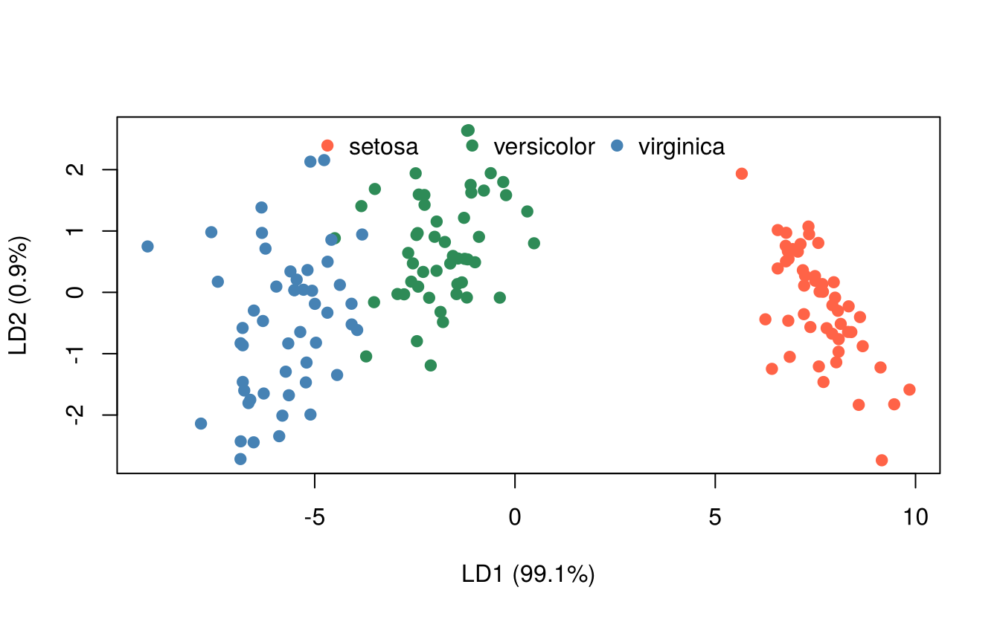

21 Discriminant function analysis
Discriminant analysis deals with individuals that belong to two or more known groups and are measured on several variables. It has two aims:
- Discrimination: find the linear combination of the variables (the discriminant function) that best separates the groups, and identify which variables contribute most to the separation.
- Classification: assign a new individual, whose group is unknown, to one of the groups.
Applications in agriculture include identifying varieties from seed or plant characters, classifying soils, distinguishing healthy from diseased plants by spectral measurements, and classifying farmers into adopter categories.
The method was introduced by R. A. Fisher (Fisher 1936) using measurements of iris flowers, the same iris data used in earlier chapters.
21.1 Fisher’s linear discriminant function for two groups
Let \(\bar{\mathbf x}_1\) and \(\bar{\mathbf x}_2\) be the vectors of means of \(p\) variables in the two groups and \(\mathbf S\) the pooled within-group covariance matrix. Fisher’s linear discriminant function is
\[Z = \mathbf a'\mathbf x = a_1 x_1 + a_2 x_2 + \cdots + a_p x_p, \qquad \mathbf a = \mathbf S^{-1}(\bar{\mathbf x}_1 - \bar{\mathbf x}_2)\]
This choice of \(\mathbf a\) maximises the ratio of the between-group difference in \(Z\) to its within-group variance. An individual is assigned to group 1 if its score \(Z\) is closer to \(\bar Z_1\) than to \(\bar Z_2\), that is, if \(Z > (\bar Z_1 + \bar Z_2)/2\) (assuming equal prior probabilities and equal costs of misclassification).
The squared distance between the group means,
\[D^2 = (\bar{\mathbf x}_1 - \bar{\mathbf x}_2)'\mathbf S^{-1}(\bar{\mathbf x}_1 - \bar{\mathbf x}_2)\]
is Mahalanobis’ \(D^2\). It measures how far apart the groups are, taking into account the variances and correlations of the variables. It is widely used in plant breeding to measure genetic divergence between genotypes.
21.1.1 Example: Iris versicolor and I. virginica
These two species are the hardest to separate.
two <- droplevels(subset(iris, Species != "setosa"))
X <- as.matrix(two[, 1:4])
g <- two$Species
n1 <- sum(g == "versicolor"); n2 <- sum(g == "virginica")
m1 <- colMeans(X[g == "versicolor", ])
m2 <- colMeans(X[g == "virginica", ])
S <- ((n1 - 1) * cov(X[g == "versicolor", ]) +
(n2 - 1) * cov(X[g == "virginica", ])) / (n1 + n2 - 2)
a <- solve(S, m1 - m2) # discriminant coefficients
round(a, 3)#> Sepal.Length Sepal.Width Petal.Length Petal.Width
#> 3.556 5.579 -6.970 -12.386The discriminant function is
\[Z = 3.556\,\text{SL} + 5.579\,\text{SW} -6.97\,\text{PL} -12.386\,\text{PW}\]
Petal width and petal length have the largest (negative) coefficients: virginica flowers have larger petals.
21.1.2 Testing the difference between the groups
Before using a discriminant function, test whether the groups differ at all. With two groups this is Hotelling’s \(T^2\) test, based on \(D^2\):
\[T^2 = \frac{n_1 n_2}{n_1 + n_2} D^2, \qquad F = \frac{n_1 + n_2 - p - 1}{(n_1 + n_2 - 2)\,p}\,T^2 \sim F_{p,\; n_1 + n_2 - p - 1}\]
D2 <- drop(t(m1 - m2) %*% solve(S) %*% (m1 - m2))
p <- 4
T2 <- n1 * n2 / (n1 + n2) * D2
F <- (n1 + n2 - p - 1) / ((n1 + n2 - 2) * p) * T2
c(D2 = D2, T2 = T2, F = F, p_value = pf(F, p, n1 + n2 - p - 1, lower.tail = FALSE))#> D2 T2 F p_value
#> 1.422e+01 3.555e+02 8.615e+01 9.540e-31The two species differ very highly significantly in their mean vectors.
21.1.3 Classification
z <- drop(X %*% a)
cutoff <- (sum(a * m1) + sum(a * m2)) / 2
predicted <- ifelse(z > cutoff, "versicolor", "virginica")
table(observed = g, predicted = predicted)#> predicted
#> observed versicolor virginica
#> versicolor 48 2
#> virginica 1 49Only 3 of the 100 flowers are misclassified, an apparent error rate of 3%.
21.2 Linear discriminant analysis with MASS::lda()
For any number of groups, lda() in the MASS package (Venables and Ripley 2002) computes the discriminant functions. With \(k\) groups there are at most \(\min(k-1, p)\) discriminant functions.
library(MASS)
fit <- lda(Species ~ Sepal.Length + Sepal.Width + Petal.Length + Petal.Width, data = iris)
fit#> Call:
#> lda(Species ~ Sepal.Length + Sepal.Width + Petal.Length + Petal.Width,
#> data = iris)
#>
#> Prior probabilities of groups:
#> setosa versicolor virginica
#> 0.3333 0.3333 0.3333
#>
#> Group means:
#> Sepal.Length Sepal.Width Petal.Length Petal.Width
#> setosa 5.006 3.428 1.462 0.246
#> versicolor 5.936 2.770 4.260 1.326
#> virginica 6.588 2.974 5.552 2.026
#>
#> Coefficients of linear discriminants:
#> LD1 LD2
#> Sepal.Length 0.8294 -0.0241
#> Sepal.Width 1.5345 -2.1645
#> Petal.Length -2.2012 0.9319
#> Petal.Width -2.8105 -2.8392
#>
#> Proportion of trace:
#> LD1 LD2
#> 0.9912 0.0088The output gives:
-
Prior probabilities: by default the group proportions in the data (here equal). Use
prior = c(...)to set them. - Group means of each variable.
-
Coefficients of linear discriminants: LD1 and LD2. (
lda()scales them so that the within-group variance of each discriminant score is 1; they are proportional to Fisher’s coefficients.) - Proportion of trace: the share of the between-group separation achieved by each function. LD1 accounts for 99% of it.
21.2.1 Plotting the discriminant scores
scores <- predict(fit)$x
plot(scores, col = c("tomato", "seagreen", "steelblue")[iris$Species], pch = 19,
xlab = "LD1 (99.1%)", ylab = "LD2 (0.9%)")
legend("top", legend = levels(iris$Species),
col = c("tomato", "seagreen", "steelblue"), pch = 19, bty = "n", horiz = TRUE)
Setosa is completely separated from the other two species along LD1; versicolor and virginica overlap slightly.
21.2.2 Is there significant separation?
With more than two groups, the overall test is a multivariate analysis of variance (MANOVA). Wilks’ lambda close to 0 indicates well-separated groups:
summary(manova(cbind(Sepal.Length, Sepal.Width, Petal.Length, Petal.Width) ~ Species,
data = iris), test = "Wilks")#> Df Wilks approx F num Df den Df Pr(>F)
#> Species 2 0.0234 199 8 288 <2e-16 ***
#> Residuals 147
#> ---
#> Signif. codes: 0 '***' 0.001 '**' 0.01 '*' 0.05 '.' 0.1 ' ' 121.2.3 Classification accuracy
#> predicted
#> observed setosa versicolor virginica
#> setosa 50 0 0
#> versicolor 0 48 2
#> virginica 0 1 49
mean(pred$class == iris$Species) # apparent accuracy#> [1] 0.98The apparent accuracy is optimistic, because the same data were used to build and to test the rule. Leave-one-out cross-validation classifies each flower with a rule built from the other 149:
#> predicted
#> observed setosa versicolor virginica
#> setosa 50 0 0
#> versicolor 0 48 2
#> virginica 0 1 49
mean(cv$class == iris$Species) # cross-validated accuracy#> [1] 0.98The cross-validated accuracy is 98%.
21.2.4 Classifying a new individual
new_flower <- data.frame(Sepal.Length = 6.0, Sepal.Width = 3.0,
Petal.Length = 4.8, Petal.Width = 1.6)
predict(fit, new_flower)#> $class
#> [1] versicolor
#> Levels: setosa versicolor virginica
#>
#> $posterior
#> setosa versicolor virginica
#> 1 2.263e-26 0.8169 0.1831
#>
#> $x
#> LD1 LD2
#> 1 -3.378 -0.04618The new flower is assigned to versicolor with a posterior probability of 0.82.
Linear discriminant analysis assumes that the variables are multivariate normal within each group and that the groups have equal covariance matrices. If the covariance matrices differ markedly, quadratic discriminant analysis (MASS::qda()) may classify better.
21.3 Mahalanobis D² among several groups
In plant breeding, \(D^2\) is computed between every pair of genotypes to measure genetic divergence, and genotypes are then grouped into clusters (e.g. by Tocher’s method) to choose diverse parents. The pairwise \(D^2\) values for the three iris species, using the pooled within-group covariance matrix:
W <- Reduce(`+`, lapply(split(iris[, 1:4], iris$Species),
function(d) (nrow(d) - 1) * cov(d))) / (nrow(iris) - 3)
means <- aggregate(. ~ Species, data = iris, FUN = mean)
M <- as.matrix(means[, -1]); rownames(M) <- means$Species
D2 <- outer(1:3, 1:3, Vectorize(function(i, j)
drop(t(M[i, ] - M[j, ]) %*% solve(W) %*% (M[i, ] - M[j, ]))))
dimnames(D2) <- list(rownames(M), rownames(M))
round(D2, 1)#> setosa versicolor virginica
#> setosa 0.0 89.9 179.4
#> versicolor 89.9 0.0 17.2
#> virginica 179.4 17.2 0.0Versicolor and virginica are the closest pair, and setosa is far from both.
Exercises
- Using the
yacondata inagricolae, carry out a linear discriminant analysis to classify plants into the three localities fromheight,stalks,roots,FOS,brixandfoliage. What is the cross-validated accuracy? - Repeat the iris analysis with
qda(). Does it classify better thanlda()? - Compute the discriminant function separating I. setosa from I. versicolor (the problem studied by Fisher) and show that the two species are perfectly separated.